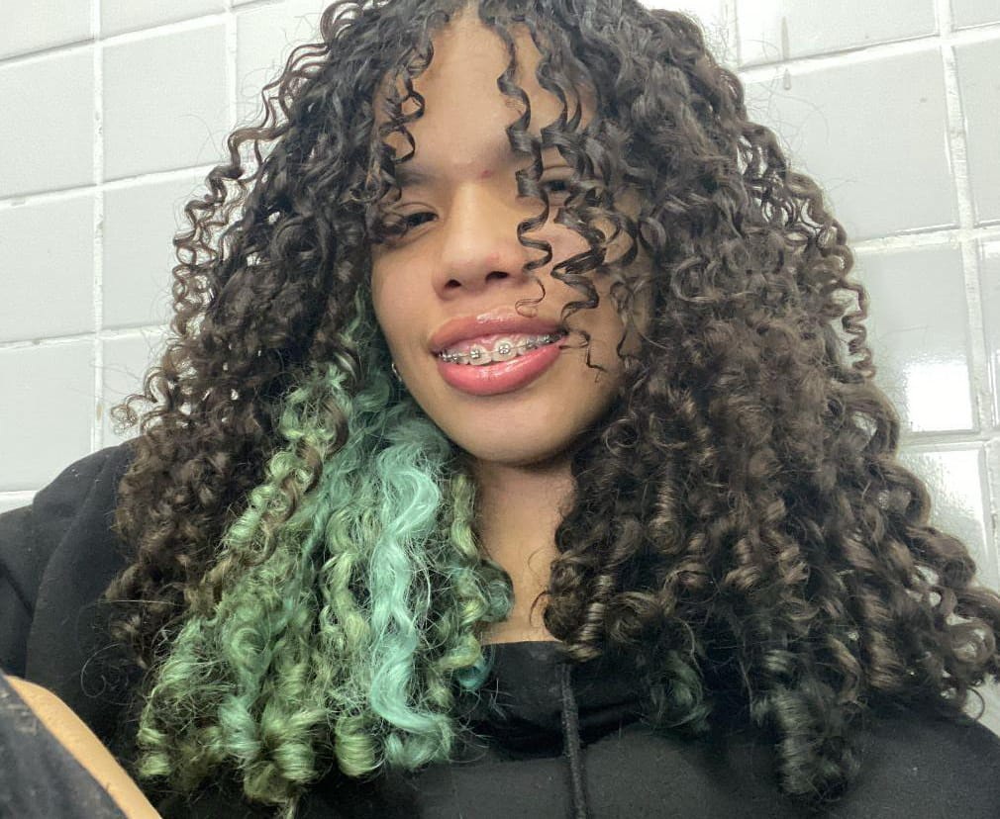
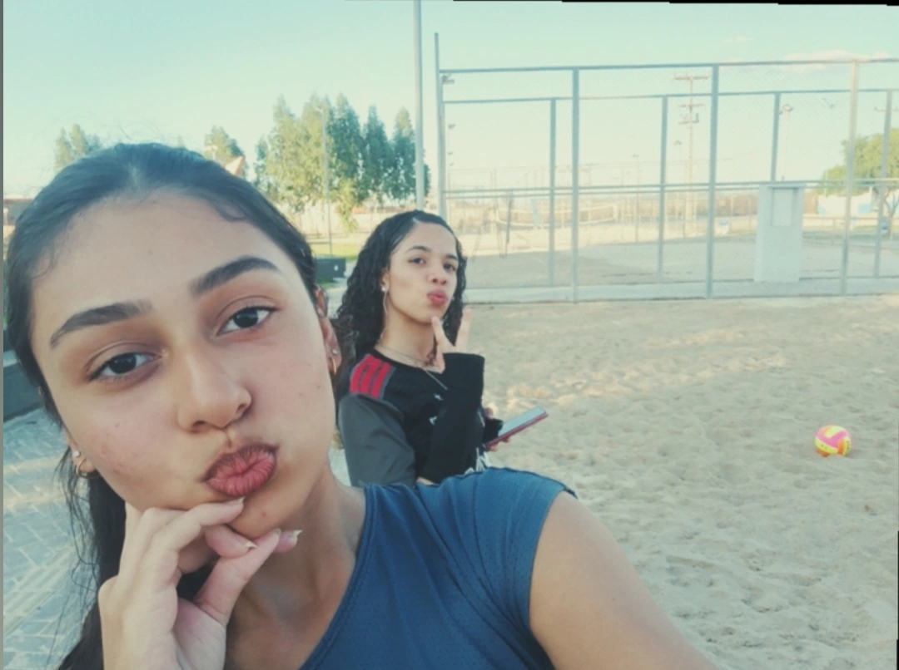
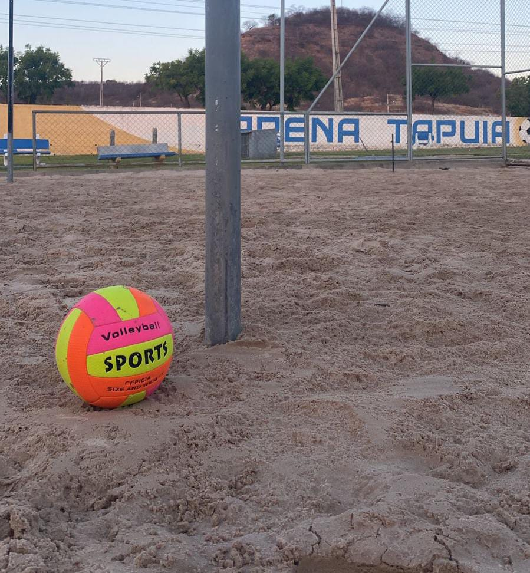

Quem sou eu?
Eu moro em São Miguel do Tapuio e estudo no CETI Dona Rosaura. Tenho 15 anos e gosto bastante do meu curso de Desenvolvimento de Sistemas.
Sou uma pessoa extrovertida, esforçada e que procura sempre dar o seu melhor em tudo o que faz. Gosto de estar cercada de pessoas, compartilhar momentos alegres e espalhar boas energias por onde passo.
Tenho uma personalidade leve, mas também sou determinada. Acredito que com dedicação e foco, é possível alcançar qualquer objetivo!
Meus hobbies
No meu tempo livre, adoro jogar vôlei, pois o esporte me ensina sobre trabalho em equipe, disciplina e superação.
Também gosto de praticar inglês, uma matéria pela qual tenho paixão. Aprender um novo idioma me faz sonhar com oportunidades maiores.
Além disso, gosto de jogar online com amigos — uma forma divertida de relaxar e socializar.
 Autor: Gabrielly